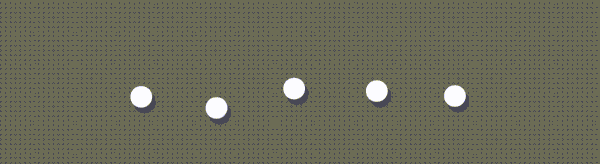
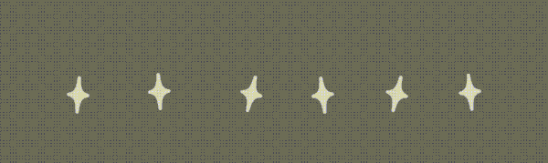

End Slate Recommendations
Crunchyroll (2025)

Living Room UI
The Problem
A large share of subscribers cancelled for the same reason: "I have nothing left to watch." Fans would subscribe for a new season, finish it, then churn — and after the last episode, they hit a blank screen at the exact moment they were deciding what came next.
The Solution
Full-bleed hero art catches fans at their most engaged moment, with sparkle indicators letting them browse recommendations without breaking immersion — the intimacy of one focused suggestion, with the utility of a full carousel.

Desktop Web UI
Pagination & Wayfinding
Another key focus of mine was designing a pagination pattern that worked in harmony with licensor title art while still giving users clear wayfinding. After several rounds incorporating Crunchyroll branding and anime motifs, the result was the "Kira" pagination pattern — a small star-shaped indicator that's since been adopted platform-wide across other carousels, well beyond ESR.



Mobile UI
The resulting designs deployed across all 8 platforms, the feature drove 692M minutes watched and 34M video plays within 7 days of launch, closing a critical competitive gap against Netflix, Disney+, and Hulu.
Today, hundreds of thousands of users discover new content through ESR every month. ( ๑ ˃ᴗ˂ )ﻭ